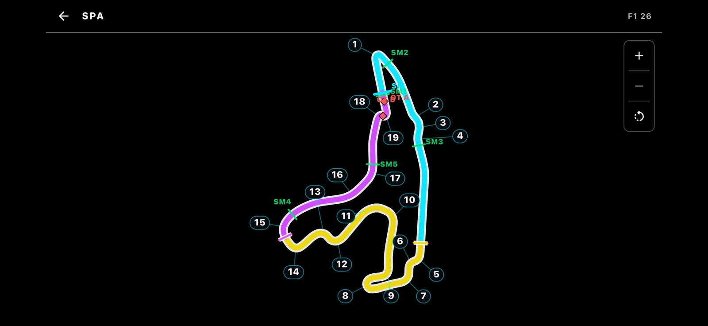
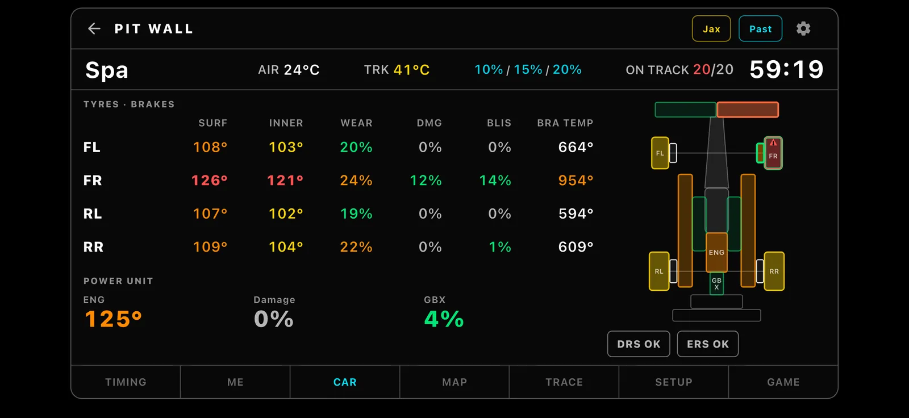

Racing Tips
Driving technique, racecraft and rules — short, practical reading.
Sim racing companion for iPhone
A complete companion for F1 sim racers, organized around what you need before, during and after every session. Everything on this page is in the current release; future work is listed separately at the end.
Arrive at every session already knowing the circuit. Choose a circuit and a car, then plan the session ahead with circuit knowledge and your own history side by side.
Coverage varies by circuit and car; missing information is labelled rather than guessed.


Keep critical information in view without changing camera or cluttering the in-game HUD. A landscape race display for your iPhone, beside the wheel.
Jax calls out what changed, when it matters, so you can keep your eyes on the track. Its calls are built from the telemetry itself — consistent and predictable, not improvised.
Jax provides information and reminders. Driving decisions and strategy calls remain yours.
See the whole race the way a pit wall does: the field, the circuit and your own car, live. Open it over the dashboard with one tap, or directly from the Home screen.



Relive a race lap by lap. JMD reconstructs the race from the telemetry it captured and plays back how the field moved, where the gaps changed and what happened along the way.
Available for races and sprint races. Replay uses only the data your device received — it cannot rebuild information the game never sent.
Every completed session is saved on your device. Each review is shaped by the session type, so practice, qualifying, Time Trial and races each show what matters for them.
Not every session contains every field. JMD reconstructs what it reliably can and shows missing data as missing.


See how you drove, not just how fast. Traces are recorded as you drive and saved with the session.
Remember what you ran and what worked. Setups are captured from your sessions and collected in a library you can filter by circuit.
No account, no sign-up. Your data lives on your device, under your control.
Available now
Driving technique, racecraft and rules — short, practical reading.
Explore Jax Max Delta with built-in demos, no game running required.
km/h or mph, °C or °F.
English, French and Spanish throughout the app.
Roadmap
Directions, not promises. Nothing here has a date, and items move to the list above only once they ship.
Practice, qualifying and race connected as one story.
Trends across many sessions: pace, consistency, tyre management.
Compound-aware tyre strategy context.
Being explored; not available today.